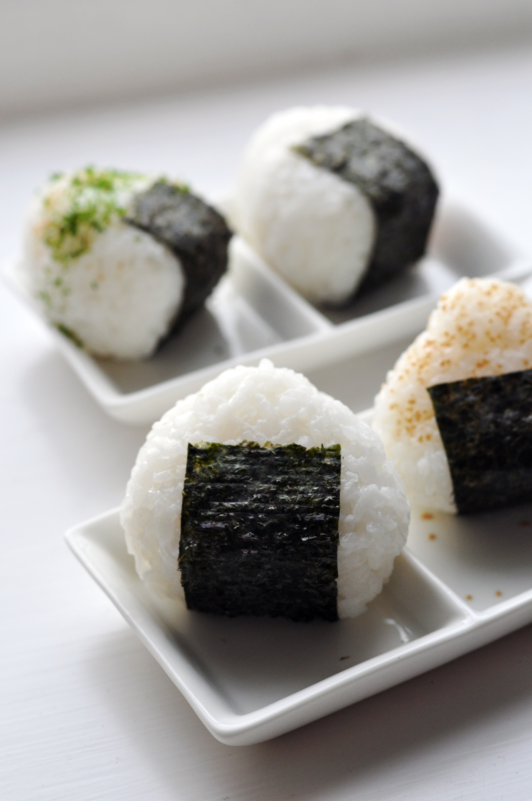

Onigiri
Home

Description
Onigiri is a traditional Japanese comfort food made from warm, cooked short-grain
rice lightly salted and shaped by hand into a triangle, ball, or cylinder. It often
hides a savory filling in the center and is wrapped in a strip of crisp nori seaweed.
Ingredients
- 4 cups uncooked short-grain white rice
- 4 cups uncooked short-grain white rice
- ¼ teaspoon salt
- ¼ cup bonito shavings (dry fish flakes)
- 2 sheets nori (dry seaweed), cut into ½-inch strips
- 2 tablespoons sesame seeds
Steps
- Wash rice in a mesh strainer until water runs clear. Combine washed rice and 4 ½ cups water in a saucepan; bring to a boil over high heat, stirring occasionally. Reduce heat to low; cover, and simmer until water is absorbed, 15 to 20 minutes. Rest for 15 minutes to allow rice to steam and become tender. Cool cooked rice.
- Combine remaining 1 cup water with salt in a small bowl (use to dampen hands before handling rice). Divide cooked rice into 8 equal portions, one portion for each onigiri.
- Divide 1 rice portion into 2; create a dimple in 1 halved rice portion and fill with 1 heaping teaspoon bonito flakes. Cover with remaining 1 halved rice portion; press lightly to enclose filling inside rice ball. Gently press rice to shape into a triangle; wrap with a nori strip and sprinkle with sesame seeds. Repeat with remaining rice portions.